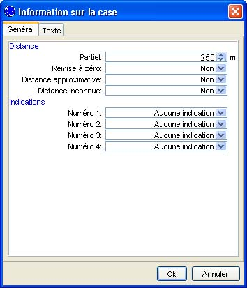
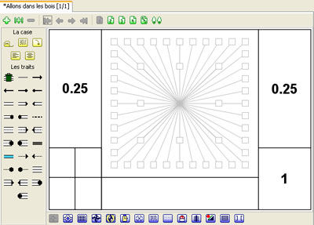

Choisir
Distance dans le menu
Données, une
boîte de dialogue apparaît pour vous permettre de saisir la distance de la case. Cette distance correspond à la distance partielle, c'est à dire à la distance à parcourrir pour atteindre le dessin de la case. Le logiciel ne possède pas de notion d'unité. Par défaut, il est considéré que la distance est saisie en mètres. Pour ceux qui veulent des distances en "inch" ou en "miles", il suffit d'aller le module multilangue pour traduire le texte correspondant à "mètre". Dans le cadre de la progression de cette formation, nous entrons une distance de 250m avant de valider notre valeur.

Au niveau de la case, nous remarquons que les 250m sont devenus 0.25 km aussi bien dans la colonne de gauche que celle de droite. Celle de gauche comporte la distance partielle alors que celle de droite comporte la distance totale parcourue depuis la dernière remise à zéro ou le départ du road book. La distance totale est calculée automatiquement par le logiciel.
